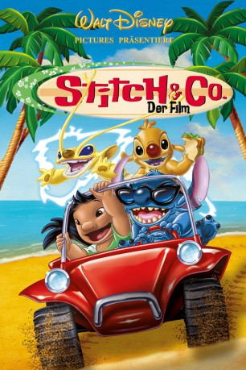

gesehen am 14.04.2017
gesehen am 14.04.2017Alternativ: Stitch! The Movie gesehen am 14.04.2017
 
 IMDB-Wertung: 6.2 / 10
IMDB-Wertung: 6.2 / 10  Metascore:
Metascore: 
Stitch ist Experiment 626 - doch was ist aus den anderen 625 geworden?! Hier kommt die Antwort - denn Stitch′s neues Zusammenleben mit Lilo & Nani wird jäh auf den Kopf gestellt: All seine 625 Vorgänger sind auf der Erde gelandet - und leider alle ebenfalls sehr zerstörerisch veranlagt! Stitch und seine Erden-Familie versuchen, das Chaos in den Griff zu bekommen...
Jahr: 2003
Dauer: 58 Minuten
FSK: 0
Land: USA Studio: Walt Disney Home EntertainmentTonspuren:
Untertitel:
Auflösung: 720p (1280x720) Größe: 1085 MB
Genre: Komödie, Animation/Trick, Familie
Regisseur: Tony Craig, Roberts Gannaway
Drehbuch: Jess Winfield, Roberts Gannaway, Nishit Shah
Soundtrack: Michael Tavera
Darsteller:
 Daveigh Chase als Lilo
Daveigh Chase als Lilo Chris Sanders als Stitch
Chris Sanders als Stitch Tia Carrere als Nani
Tia Carrere als Nani David Ogden Stiers als Dr. Jumba Jookiba
David Ogden Stiers als Dr. Jumba Jookiba Kevin McDonald als Pleakley
Kevin McDonald als Pleakley Ving Rhames als Cobra Bubbles
Ving Rhames als Cobra Bubbles Dee Bradley Baker als David Kawena
Dee Bradley Baker als David Kawena Kevin Michael Richardson als Captain Gantu
Kevin Michael Richardson als Captain Gantu Jeff Bennett als Dr. Jacques von Hamsterviel
Jeff Bennett als Dr. Jacques von Hamsterviel Corey Burton als Additional voices
Corey Burton als Additional voices Zoe Caldwell als Grand Councilwoman
Zoe Caldwell als Grand Councilwoman Tress MacNeille als Hamsterviel's Ship Computer
Tress MacNeille als Hamsterviel's Ship Computer Liliana Mumy als Myrtle Edmonds
Liliana Mumy als Myrtle Edmonds Rob Paulsen als Experiment 625 / Chief Technician
Rob Paulsen als Experiment 625 / Chief Technician Frank Welker als Experiment 221 'Sparky
Frank Welker als Experiment 221 'SparkyDatei: X:\Kinder Disney HD\Lilo & Stitch\Stitch & Co. - Der Film (2003, FSK0, 1280x720).mkv seit 15.03.2016
Festplatte: Kinder-Filme+Trick
 Es gibt insgesamt 8 Filme in der Gruppe 'Kinder Disney HD\Lilo & Stitch'
Es gibt insgesamt 8 Filme in der Gruppe 'Kinder Disney HD\Lilo & Stitch'